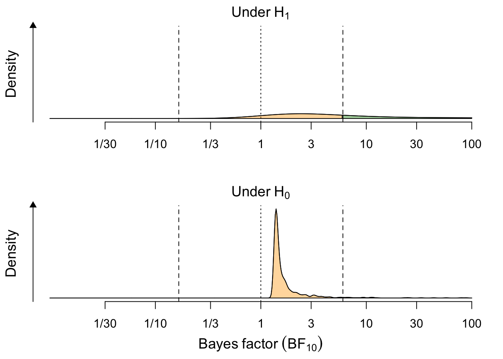
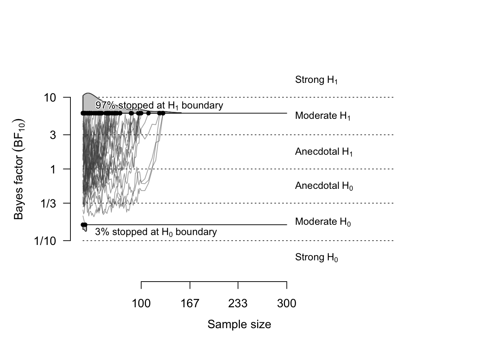
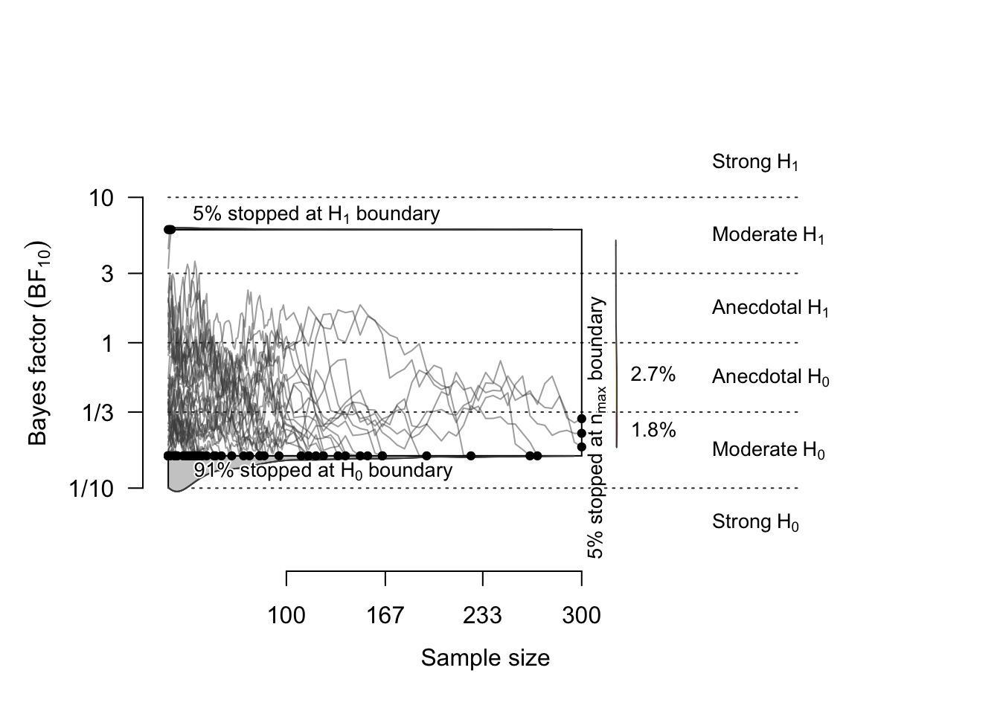
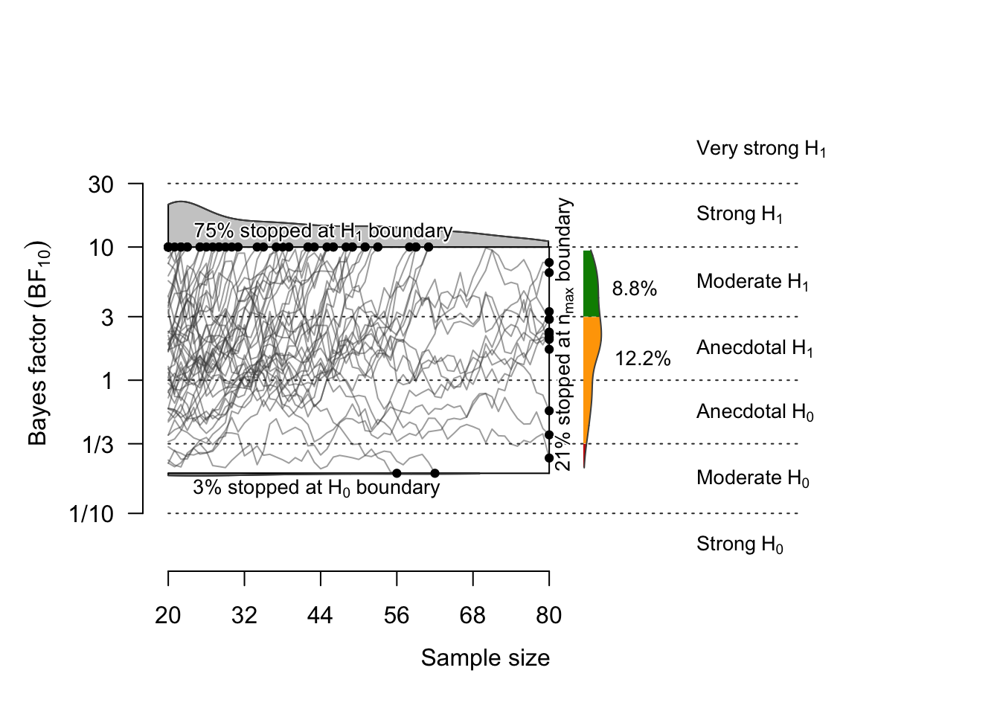
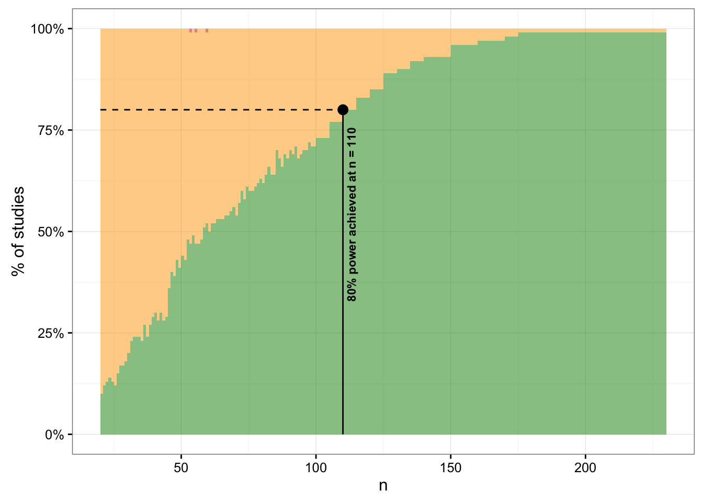
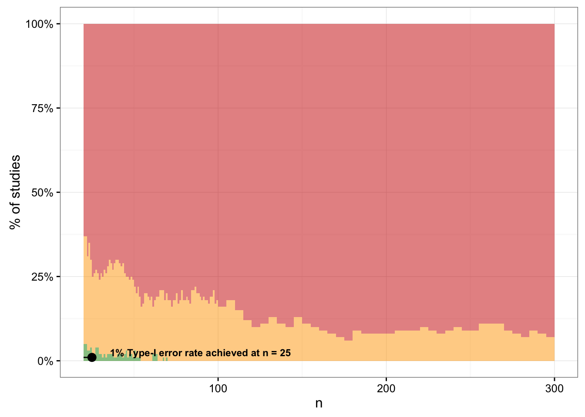

This document demonstrates how to do a design analysis (aka. power analysis) for studies which use Bayes factors as index of evidence. For more details about Bayes Factor Design Analysis (BFDA), see our paper:
Schönbrodt, F. D. and Wagenmakers, E.-J. (2016). Bayes Factor Design Analysis: Planning for Compelling Evidence. Available at SSRN: http://ssrn.com/abstract=2722435
The BFDA package is not on CRAN yet, but you can install the development version from Github:
library(devtools)
install_github("nicebread/BFDA", subdir="package")BFDA.simBFDA.analyzeplot, SSD, compDist)SSD)To summarize, the general workflow is (here shown without parameters; these are discussed later):
sim.H1 <- BFDA.sim(expected.ES = 0.5, ...)
sim.H0 <- BFDA.sim(expected.ES = 0, ...)
BFDA.analyze(H1)
BFDA.analyze(H0)
plot(sim.H1)
plot(sim.H0)
SSD(sim.H1)
SSD(sim.H0)As we do not know in advance whether H1 or H0 provide a better predictive performance of real world data, we want to evaluate the performance of a design under both hypotheses. Hence, we have to simulate a “H1 world” and a “H0 world”:
sim.H1 <- BFDA.sim(expected.ES=0.5, type="t.between", n.min=20, n.max=300, alternative="directional", boundary=Inf, B=1000, verbose=TRUE, cores=2)
sim.H0 <- BFDA.sim(expected.ES=0, type="t.between", n.min=20, n.max=300, alternative="directional", boundary=Inf, B=1000, verbose=TRUE, cores=2)Let’s go through the most important parameters (for a full list of options, see ?BFDA.sim):
expected.ES: The assumed effect size (ES). In classical power analysis, this is a fixed number. Here, you can also provide a vector, which quantifies the uncertainty about the true ES. For example: expected.ES=rnorm(100000, 0.5, 0.1). If a vector is provided, a new ES is drawn from this vector for each simulated study. The metric for expected.ES depends on the type of design (see net bullet point):
type = "t.between or type = "t.paired“: expected.ES has to be provided as Cohen’s dtype = "correlation": expected.ES has to be provided as correlationtype: Type of design. Currently, 3 designs are implemented: A between-group t-test (“t.between”), a paired t-test (“t.paired”), and correlations (“correlation”)n.min and n.max: The initial sample size and the maximum sample size that is tested in the sequential procedure.alternative: Either “directional” for directed hypotheses (default) or “undirected” for two-sided testsB: Number of simulated studies. Aim for B >= 10,000 for stable results (in this document we use B=1000 to save some computation time).cores: Multicore support. Add as many cores as you have to speed up computations.The simulations of the “H1 world” and a “H0 world” should have the same parameters (alternative, rscale, boundary, n.min) except the expected.ES (in the actual data analysis, we will apply the same test to the data set, regardless whether data came from H0 or H1 (what we don’t know anyway.)).
The BFDA uses the BayesFactor package to compute between and paired t-test. By default, it uses an rscale of sqrt(2)/2 for the JZS prior on effect sizes under H1. For correlations, it uses the code provided by Wagenmakers, E. J., Verhagen, J., & Ly, A. (2016). How to quantify the evidence for the absence of a correlation. Behavior Research Methods, 1–14. http://doi.org/10.3758/s13428-015-0593-0 (see https://osf.io/cabmf/).
By default, a full sequential design without evidential stopping threshold is simulated. That means, … That allows to extract …
Next, we can retrieve summary statistics from our simulations. For these summaries, we can define evidential thresholds (“How”), minimal and maximal sample sizes
For example, we can get the operational characteristics of a fixed-n design:
BFDA.analyze(sim.H1, design="fixed", n.max=50, boundary=6)## 52% showed evidence for H1 (BF > 6)
## 46% were inconclusive (0.1667 < BF < 6)
## 2% showed evidence for H0 (BF < 0.1667)BFDA.analyze(sim.H0, design="fixed", n.max=50, boundary=6)## 0% showed evidence for H1 (BF > 6)
## 55% were inconclusive (0.1667 < BF < 6)
## 45% showed evidence for H0 (BF < 0.1667)And for a sequential design:
BFDA.analyze(sim.H1, design="sequential", n.min=20, n.max=300, boundary=10)## outcome percentage
## 1 Studies terminating at n.max 0%
## 2 Studies terminating at a boundary 100%
## 3 --> Terminating at H1 boundary 99%
## 4 --> Terminating at H0 boundary 1%
##
## Average sample number (ASN) at stopping point (both boundary hits and n.max): n = 59
##
## Sample number quantiles (50/80/90/95%) at stopping point:
## 50% 80% 90% 95%
## 46 89 110 131Here, all studies hit a boundary before n.max is reached. If we reduce n.max, some studies do not reach an evidential threshold:
BFDA.analyze(sim.H1, design="sequential", n.min=20, n.max=100, boundary=10)## outcome percentage
## 1 Studies terminating at n.max 15%
## 2 Studies terminating at a boundary 85%
## 3 --> Terminating at H1 boundary 84%
## 4 --> Terminating at H0 boundary 1%
##
## Of 15% of studies terminating at n.max:
## 10% showed evidence for H1 (BF > 3)
## 5% were inconclusive (3 > BF > 1/3)
## 0% showed evidence for H0 (BF < 1/3)
##
## Average sample number (ASN) at stopping point (both boundary hits and n.max): n = 54
##
## Sample number quantiles (50/80/90/95%) at stopping point:
## 50% 80% 90% 95%
## 46 89 100 100compDist(BFDA.H1=sim.H1, BFDA.H0=sim.H0, n=50, boundary=c(1/6, 6), xlim=c(1/11, 31))
Under H1:
plot(sim.H1, n.min=20, boundary=c(1/6, 6))
Under H0:
plot(sim.H0, n.min=20, boundary=c(1/6, 6))
Under H1:
plot(sim.H1, n.min=20, n.max=80, boundary=c(1/5, 10))
What sample size do you need to ensure, say, 80% probability that a study design finds an effect of size, say, 0.5 with a BF >= 10?
SSD(sim.H1, power=.80, boundary=c(1/10, 10))## A >= 80% (actual: 80%) power achieved at n = 110
## This setting implies long-term rates of:
## 20% inconclusive results and
## 0% false-negative results.
What sample size do I need to have less than 1% of studies with a false positive error, if I set the boundary to 3? (Note: A BF threshold of 3 is in almost all applications too lenient! Aim for a BF of at least 5).
SSD(sim.H0, alpha=.01, boundary=c(1/3, 3))## A <= 1% (actual: 1%) long-term rate of Type-I errors is achieved at n = 25
## This setting implies long-term rates of:
## 24% inconclusive results and
## 75% true-negative results.
Note: The SSD function automatically detects whether a H1 or a H0 simulation is analyzed.
Granting agencies probably want a fixed sample size in the planning stage in order to quantify the amount of funding. For how much participant renumeration should one apply when using a sequential design?
We suggest to determine the requested sample size using two different design analyses:
# We use the simulation from above.
# Check the expected sample sizes for an evidential boundary of 10
a1 <- BFDA.analyze(sim.H1, design="sequential", n.min=20, n.max=NA, boundary=10)
# --> see 80% quantile in output
a1## outcome percentage
## 1 Studies terminating at n.max 0.1%
## 2 Studies terminating at a boundary 99.9%
## 3 --> Terminating at H1 boundary 99.9%
## 4 --> Terminating at H0 boundary 0%
##
## Of 0.1% of studies terminating at n.max:
## 0.1% showed evidence for H1 (BF > 3)
## 0% were inconclusive (3 > BF > 1/3)
## 0% showed evidence for H0 (BF < 1/3)
##
## Average sample number (ASN) at stopping point (both boundary hits and n.max): n = 58
##
## Sample number quantiles (50/80/90/95%) at stopping point:
## 50% 80% 90% 95%
## 45 86 115 140# Alternative approach: access stopping-ns directly
n_q80 <- ceiling(quantile(a1$endpoint.n, prob=.80))
n_q80## 80%
## 8680% of all studies stop earlier than n = 86. How does a design with that n.max perform concerning rates of misleading evidence?
BFDA.analyze(sim.H1, design="sequential", n.min=20, n.max=n_q80, boundary=10)## outcome percentage
## 1 Studies terminating at n.max 19.7%
## 2 Studies terminating at a boundary 80.3%
## 3 --> Terminating at H1 boundary 80.3%
## 4 --> Terminating at H0 boundary 0%
##
## Of 19.7% of studies terminating at n.max:
## 7.3% showed evidence for H1 (BF > 3)
## 12.1% were inconclusive (3 > BF > 1/3)
## 0.3% showed evidence for H0 (BF < 1/3)
##
## Average sample number (ASN) at stopping point (both boundary hits and n.max): n = 51
##
## Sample number quantiles (50/80/90/95%) at stopping point:
## 50% 80% 90% 95%
## 45 86 86 86BFDA.analyze(sim.H0, design="sequential", n.min=20, n.max=n_q80, boundary=10)## outcome percentage
## 1 Studies terminating at n.max 62.2%
## 2 Studies terminating at a boundary 37.8%
## 3 --> Terminating at H1 boundary 2.2%
## 4 --> Terminating at H0 boundary 35.6%
##
## Of 62.2% of studies terminating at n.max:
## 0.6% showed evidence for H1 (BF > 3)
## 18.8% were inconclusive (3 > BF > 1/3)
## 42.8% showed evidence for H0 (BF < 1/3)
##
## Average sample number (ASN) at stopping point (both boundary hits and n.max): n = 74
##
## Sample number quantiles (50/80/90/95%) at stopping point:
## 50% 80% 90% 95%
## 86 86 86 86In this design analysis for the SBF+maxN design, we can see that, although we apply for 86 participants in each group, we can expect to stop with 45 participants or less with a 50% chance, if H1 is true. The false negative rate is virtually 0%. That means, if the effect exists in the expected size, this design virtually guarantees to detect it.
Under H0, at least half of the studies will have to use the full requested sample of 86 participants. We have a 2.2% false positive error rate, and 35.6% of all studies will correctly stop at the H0 boundary. The remaining 62.2% of all studies will remain inconclusive with respect to the desired evidential threshold of \(BF_{10}\) <= 1/10. However, the Bayes factor of these studies can still be interpreted in size and direction.
In the grant application, you can write that the study has a 80% chance to provide compelling evidence either for or against the focal hypothesis. You could also mention that studies failing to reach the threshold for compelling evidence are not necessarily a “failure”, but that their BF can still be interpreted, and in XX% of all cases will point into the correct direction.